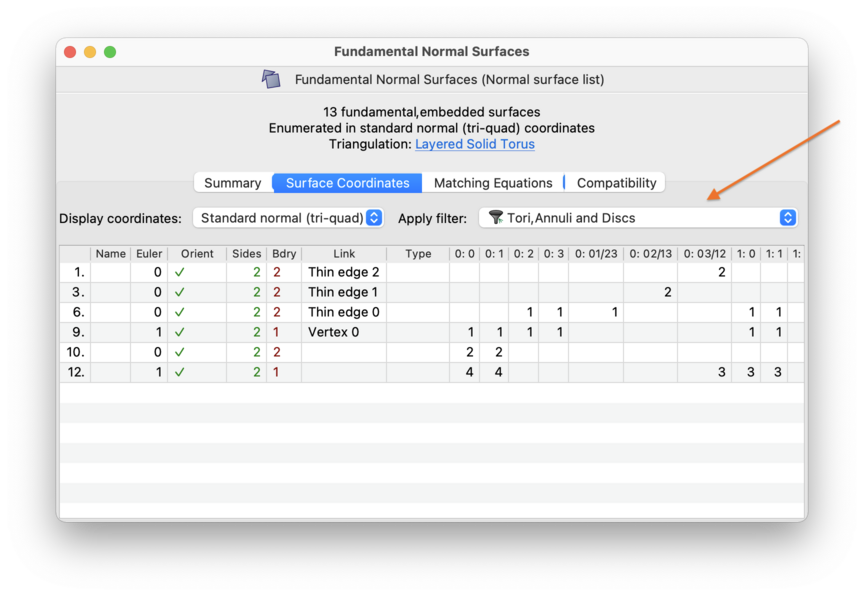
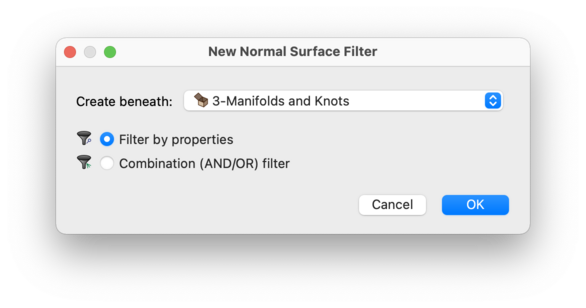
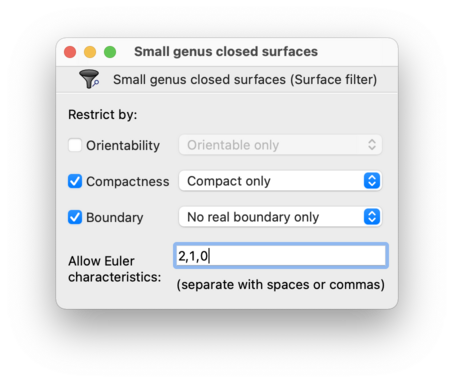
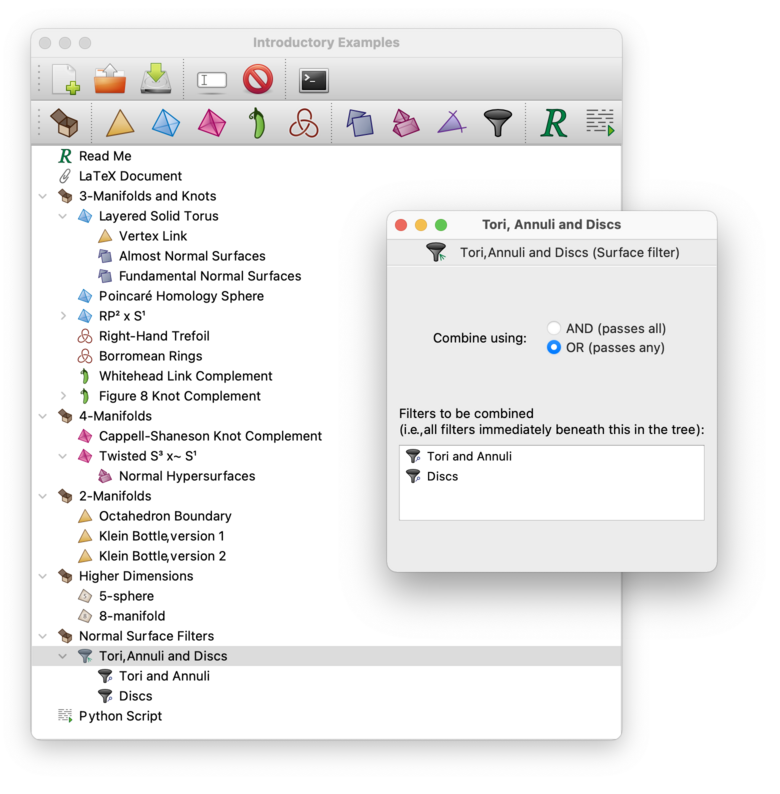
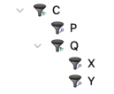

Filtering Surfaces (3-D) | |
| Prev | Normal Surfaces and Hypersurfaces | Next |
Large triangulations often contain a great many “junk surfaces”, and it is sometimes desirable to restrict a long normal surface list to just those surfaces that satisfy some simple constraints. For surfaces within 3-manifold triangulations, Regina allows you to do this using surface filters.
You can create filters based on simple tests (such as orientability, boundary or Euler characteristic), and you can combine filters into complex boolean expressions. Each filter is stored as a separate packet in the packet tree.
To apply a filter to a normal surface list, simply choose the filter from the drop-down box above the coordinate viewer. The table of surfaces will immediately shrink to include only those surfaces that pass the selected filter. To remove the filter, select None from the drop-down box.

Filtering a surface list only affects how you view it: the underlying list is not changed. Moreover, only the coordinate viewer will be filtered—other tabs (such as the summary tab or compatility matrices) will be unaffected.
To create a new filter, select → from the menu (or press the corresponding toolbar button).
The new packet window will ask what type of filter to create. The different types of filter are described in their own sections below.

To filter by simple properties (such as orientability, boundary and/or Euler characteristic), create a new filter and select Filter by properties.
Now you can open your new filter and select your constraints. To pass through the filter, a surface must satisfy all of the constraints that you set. In the example below, a surface will only pass if it is closed (i.e., compact with no boundary) and has Euler characteristic 2, 1 or 0. In other words, this filter selects spheres, projective planes, tori and Klein bottles (as well as other disconnected surfaces, but vertex or fundamental normal surfaces will never be disconnected).

The constraints you can set are:
- Orientability
Check this to allow only orientable surfaces, or only non-orientable surfaces.
- Compactness
Check this to allow only compact surfaces (i.e., surfaces with finitely many discs), or only spun-normal surfaces (i.e., non-compact surfaces with infinitely many discs).
- Boundary
Check this to allow only surfaces with real boundary, or only surfaces with no real boundary. Here real boundary means that some discs in the surface touch the boundary of the triangulation.
This constraint is independent of whether the surface is spun (non-compact). Typical spun-normal surfaces do not have real boundary, since they live in ideal triangulations with no boundary triangles. However, if your triangulation has both ideal vertices and boundary triangles, then it is possible for a spun-normal surface to have real boundary also.
- Euler Characteristic
Check this to allow only surfaces with particular Euler characteristics. You can allow more than one Euler characteristic; simply type them all into the box provided.
To combine several other filters into a boolean expression, create a new filter and select Combination (AND/OR) filter.
A combination filter is a high-level filter that combines all of the filters immediately beneath it in the packet tree. If you open the combination filter, you can select whether a packet must pass all of the packets beneath it (AND), or any of the packets beneath it (OR). You will also see a box listing which “child filters” are being combined.

The child filters will often be
property-based filters,
although they may be other combination filters if you need to build
up more complex boolean expressions.
A combination filter will only combine its
immediate children—not its
children's children and so on.
In the example below, the combination filter
C will only combine the children
P and Q.
In turn, Q will combine
X and Y;
the result (depending on how the filters are set) might look something like
“P and
(X or Y)”.

| Prev | Contents | Next |
| Analysis | Up | Angle Structures |